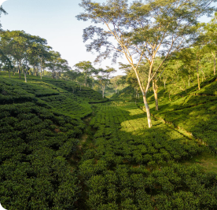

Lịch sử lá trà Tân Cương
Lịch sử lá trà Tân Cương
Nhắc đến Thái Nguyên, không thể không nhắc đến trà Tân Cương. Thậm chí, trà Tân Cương còn được coi là bảo bối của vùng, là tinh túy của đất trà Thái Nguyên. Và đặc biệt, trong câu chuyện của những ngày đầu xuân thì không thể thiếu thức uống này. Hãy cùng chúng tôi ôn lại câu chuyện về lịch sử cây chè Tân Cương để hiểu hơn vì sao cây chè lại gắn bó với người dân ở đây đến thế nhé!
Mục lục
Lịch sử ra đời mang màu sắc truyền thuyết của trà.
a. Sự ra đời của trà
Trà là loại đồ uống được sử dụng nhiều nhất trên thế giới, có một thời kỳ mà cả thế giới đã phải phát cuồng vì trà. Bạn có thắc mắc trà đã ra đời như thế nào không? Xét về khía cạnh lịch sử hay sinh học, các chuyên gia đều thống nhất trà có nguồn gốc từ khu vực châu Á, chủ yếu là ở Tây Nam và Bắc Trung Quốc. Thời gian con người sử dụng trà chính xác từ bao giờ thì không ai biết, tuy nhiên được ước chừng là dưới triều nhà Thương (1600 TCN - 1046 TCN). Theo những tài liệu cổ của Trung Quốc, trà là do Thần Nông tìm ra, Điều này được dẫn chứng rõ ràng trong tác phẩm “Trà Kinh” của Lục Vũ vào năm 780 sau Công Nguyên. Thần Nông thường được biết với tên gọi Viêm Đế. ông cũng được coi là một trong Tam Hoàng và được xem là một anh hùng văn hóa của dân tộc Hoa Hạ. Theo truyền thuyết, Thần Nông sống cách đây khoảng hơn 5.000 năm và là người đã dạy dân nghề làm ruộng, chế ra cày bừa, cũng như phát triển nghề làm thuốc trị bệnh, cho nên trong dân gian có câu “Thần Nông thường bách thảo, giáo nhân y liệu dữ nông canh”. Ông đi tới đâu cũng tìm kiếm, thử nếm các loại cây cỏ trong tự nhiên để phân biệt đâu là thuốc chữa bệnh, đâu là thuốc độc.
Lịch sử trà Tân Cương - Thái Nguyên
Năm 1922 địa danh Tân Cương bắt đầu xuất hiện ở xứ Thái Nguyên. Còn duyên nợ về chè Tân Cương thì phải nói đến ông Đội Năm - Vũ Văn Hiệt - người đã giúp người dân khai hoang, mở đất rồi lấy giống chè từ trại chè Phú Hộ thuộc huyện Thanh Ba, tỉnh Phú Thọ về đây. Và ông Đội Năm đã trở thành ông tổ về nghề chè ở Tân Cương từ thuở đó. Cây chè Tân Cương được trồng trên vùng đất với khí hậu ôn hòa, sinh khí hội tụ, đã tạo nên vùng thổ nhưỡng thuận lợi mang đầy đủ các yếu tố tốt lành để cây chè sinh trưởng và phát triển.